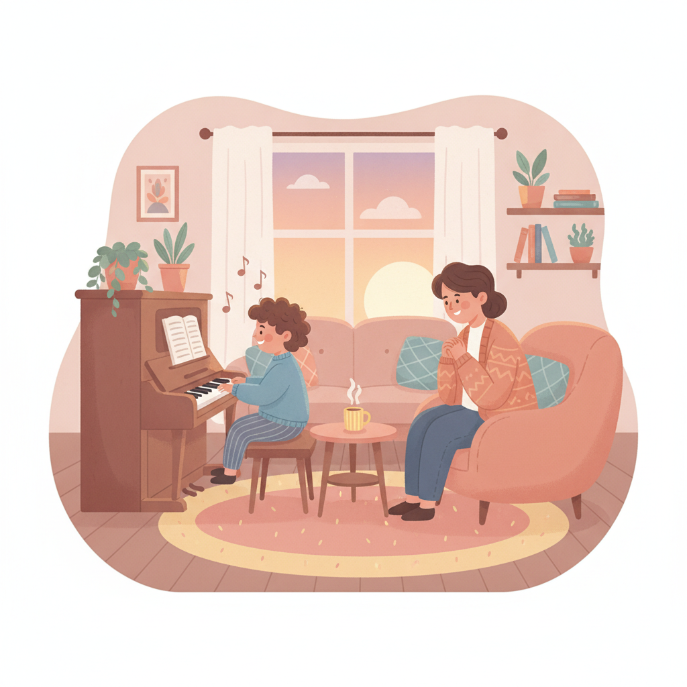
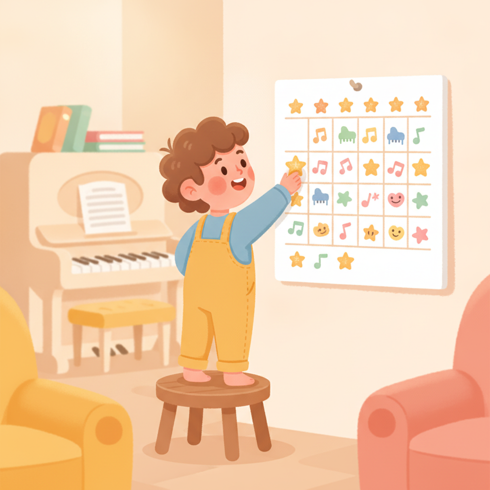
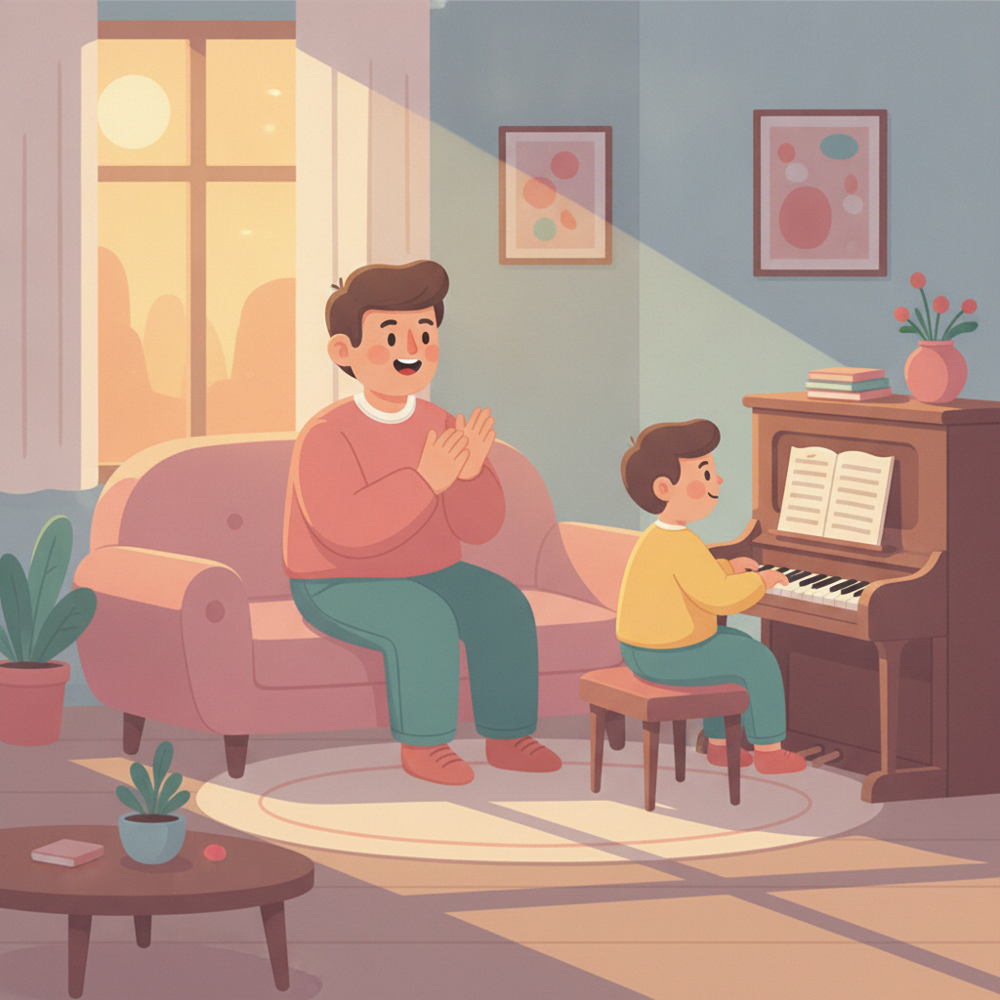

孩子不肯練琴？幫他建立練琴習慣的 5 個方法
「上課的時候很開心，回家連琴蓋都不掀。」如果這句話說中了你家的日常，先深呼吸。你不是失敗的家長，他也不是不愛音樂。
孩子不肯練琴，多數時候不是不愛音樂，是「練習」被設計得太難開始。固定時段、縮小單位、讓他選曲、讓進步看得見、家長只當聽眾——把這五件事調整好，練習就有機會自己發生。
五個方法，沒有一個需要吼。下面一個一個講。

「他上課明明很投入，為什麼回家連碰都不碰？」這大概是我被家長問過最多次的問題，多到我閉著眼睛都能想像那個畫面：晚餐後你提醒了一次、兩次，第三次語氣開始變了，孩子拖著腳走到琴前，彈得心不在焉，你在旁邊越聽越煩。最後兩個人都氣。然後你開始懷疑自己——是不是不該讓他學？是我逼太緊，還是管太鬆？我想先把這個結打開。學琴三個月到兩年的孩子，「上課願意、回家不練」普遍到幾乎是必經之路，問題很少出在愛不愛音樂。多半出在，練習被設計成了什麼樣子。
先說一個我的學生的故事。小二的男孩，學琴快一年，有天下課他媽媽留下來，很疲憊地跟我說：「老師，我們每天都為了練琴吵架，我快撐不下去了。」他們家的規定是每天練三十分鐘，計時器一按下去，孩子就開始摸鉛筆、喝水、上廁所，把三十分鐘熬成一場消耗戰。媽媽吼，孩子哭。琴聲反而是最少的。我請媽媽回家做一個實驗：把「去練三十分鐘」整句收起來，換成——「彈一小段給我聽，好不好？」三個禮拜後她回來跟我說，孩子有天彈完那一小段，自己接著彈了二十分鐘。沒有人叫他。這個實驗背後，其實就是接下來的五個方法。
方法一：小孩不想練琴，先檢查練習有沒有固定時段
我在課堂上問過很多孩子：「你都什麼時候練琴？」最常聽到的答案是——「媽媽叫我的時候。」你聽出問題了嗎？練習沒有自己的位置，它每天都是一道臨時指令，而臨時指令天生就會被抵抗。我會建議把練琴綁在一件每天固定發生的事後面：洗完澡之後、晚餐前、書包放下來的那十五分鐘。位置固定了，孩子就不必每天重新決定「要不要練」，你也不必每天重新開戰。決定是最耗力氣的。把決定拿掉，剩下的只是去做。
方法二：把「練三十分鐘」改成「彈一小段給我聽」
回到那個實驗。它有效的原因很簡單：對一個八歲的孩子來說，「三十分鐘」是一面看不到頂的牆，還沒開始就想逃；「一小段」卻是一顆搆得到的果子。門檻低到不值得抵抗，他就會開始。而開始，是練習裡最難的部分——我看過太多次了，孩子只要真的坐下來彈了第一句，手就會自己往下走。所以別用時間當單位，用內容：這一段、這八小節、這首的第二行。單位越小，越容易開始；越容易開始，越常發生。習慣就是這樣長出來的。

方法三：這週的曲子，留一首讓他自己選
我的課堂上有個屢試不爽的現象：回課的時候，孩子彈得最好的，永遠是他自己選的那首。即使它比指定曲難。因為那是「他的」曲子，不是老師的功課，卡關的時候他願意多撐一下。所以我都會在教材之外，留一個位置給孩子點歌——卡通主題曲、他在學校聽到的歌，都好。你在家也可以做一樣的事：問他「你最想彈哪首？」然後把那首放進每天的練習裡。順帶一提，如果孩子從一開始就抗拒碰琴、撞牆撞得特別兇，有時候要回頭檢查的是樂器本身合不合適，我在怎麼幫孩子挑第一個樂器那篇，聊過怎麼從個性和聲音去看。
方法四：讓進步看得見，孩子才追得下去
練琴最殘忍的一點，是進步慢到當事人自己看不見。今天的他和昨天的他聽起來一模一樣，那為什麼要練？所以進步需要被「存檔」。方法很多：月曆上貼一張貼紙、把練完的段落劃掉、或是我最推薦的——每隔幾週用手機錄一小段。我有個學生翻到三個月前的練習影片，自己嚇一跳：「我以前彈這麼慢喔？」那天之後，她練琴不太需要人催了。因為她親眼看到，練習真的有用。這比任何一句「你要加油」都有力。

方法五：孩子練琴的時候，家長當聽眾就好
這一條，是寫給最認真的家長的。我在教室裡看過一個對比，印象很深：家長坐在旁邊逐句糾錯的孩子，越彈越小聲，眼睛一直飄向大人；而家長只說了一句「剛剛那段真好聽，再彈一次給我聽」的孩子，會主動把那段再彈一遍，還挺直了背。孩子分得出來你是督察還是觀眾。督察讓人想下班，觀眾讓人想表演。所以把糾錯的工作放心交給我，那是我上課要做的事；你的工作只有一個——當他這輩子最捧場的聽眾。這件事，只有你做得到。
還是練不下去？可能不是習慣的問題
最後想跟你說一件事。如果五個方法都試了，孩子還是每天在琴前掙扎，那麼卡住的可能不是習慣，是曲目和進度跟他不合拍——太難，他撐不住；太簡單，他覺得無聊。這種時候與其在家硬磨，不如讓我看一眼。你可以用 Line 跟我聊聊孩子的狀況：學多久了、卡在哪首、在家是什麼樣子，我會把進度調整成他撐得住、也彈得出成就感的樣子。門檻對了。習慣才有地方長。
常見問題
孩子每天要練多久才夠？
初學階段，每天 10 到 15 分鐘的專注練習，效果遠勝過週末一次補一小時。練琴習慣的關鍵是頻率，不是長度。等孩子自己坐得住、想彈久一點了，時間自然會拉長，不必急著規定。
可以用獎勵讓孩子練琴嗎？
短期可以當引子，但別把獎勵綁在「練滿幾分鐘」上，那會讓孩子學會坐好等時間到。要獎勵，就獎勵具體的小成果，例如把一段彈順了。而對孩子來說，最有效的獎勵往往不是東西，是被認真聽見、被具體稱讚。
孩子說想放棄怎麼辦？
先分辨他是討厭音樂，還是討厭挫折。大多數是後者，而挫折常常來自曲目和進度不合拍——太難撐不住，太簡單又無聊。先跟老師聊聊、調整難度，通常孩子就回來了。別在他最挫折的那一天做退場的決定。
快速重點
- 上課願意、回家不練，是學琴路上的常態，不代表孩子不愛音樂。
- 把練琴綁在固定時段後面，孩子不必每天重新決定「要不要練」。
- 用「彈一小段」取代「練三十分鐘」，門檻越低，練習越常發生。
- 留一首讓孩子自己選，再用貼紙或錄影讓進步看得見。
- 糾錯交給老師，家長只做一件事：當最捧場的聽眾。